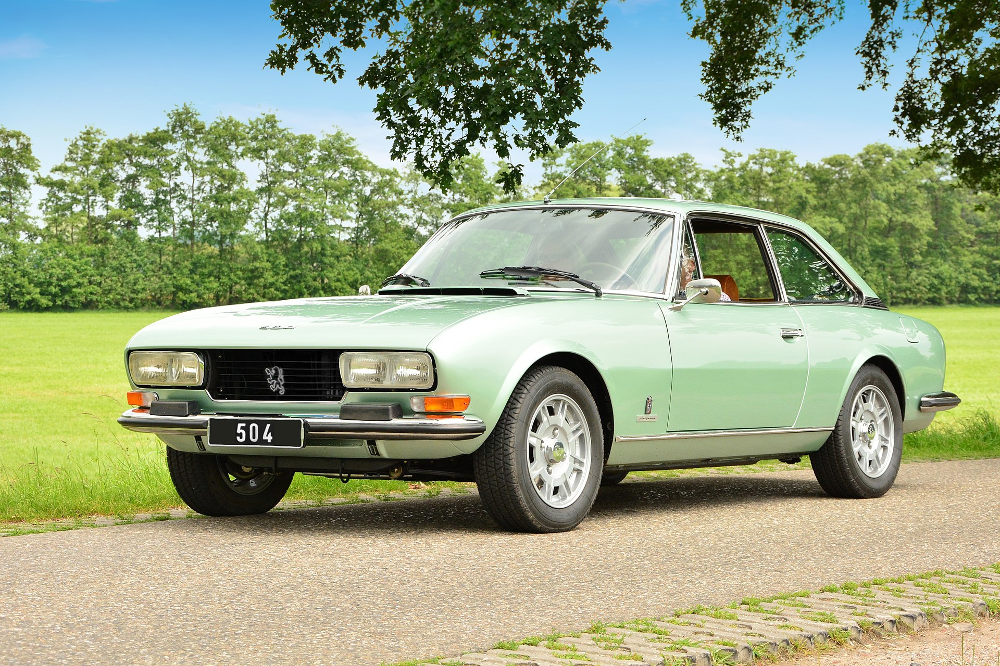
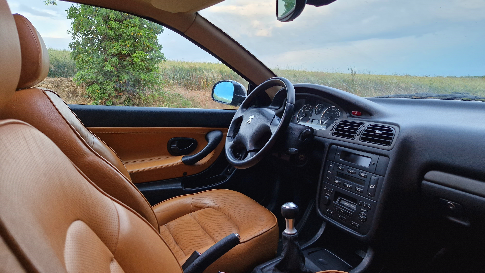
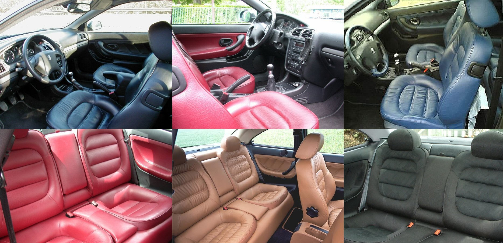
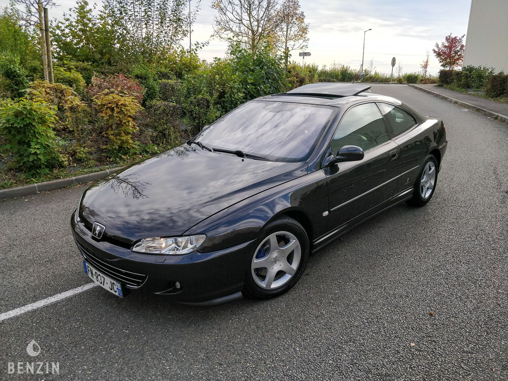
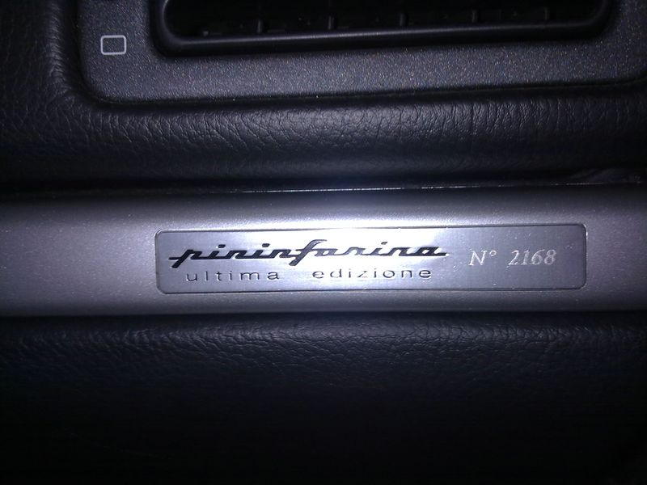
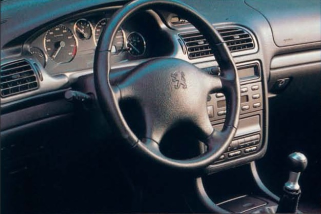
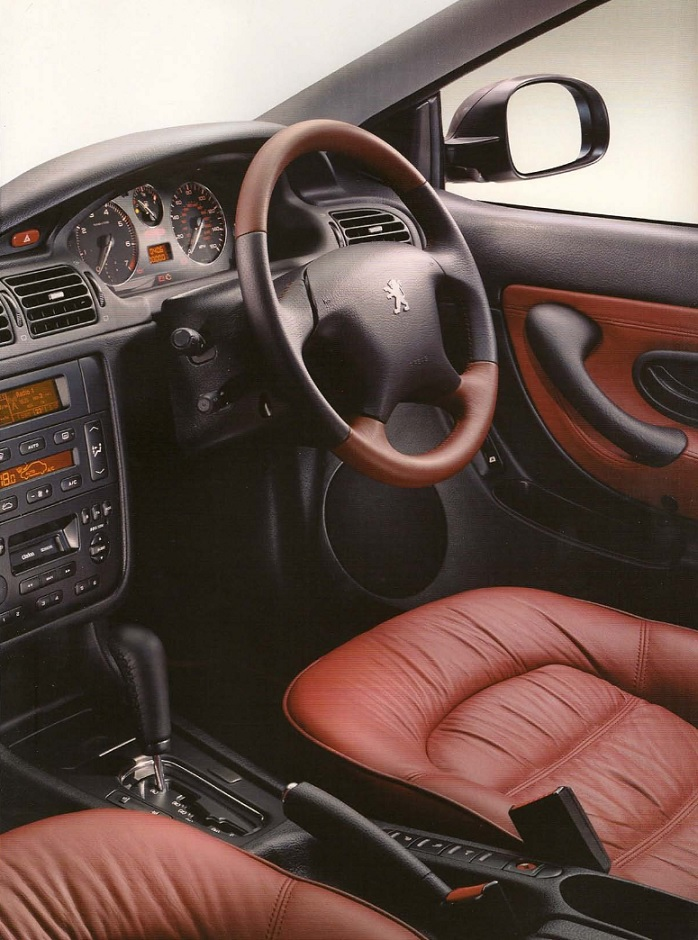
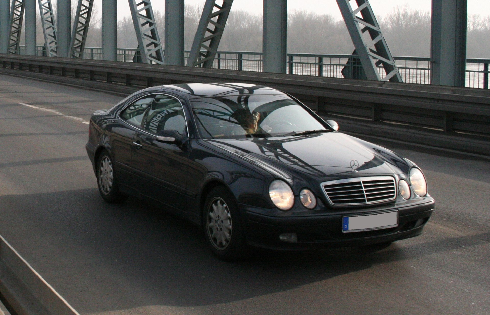
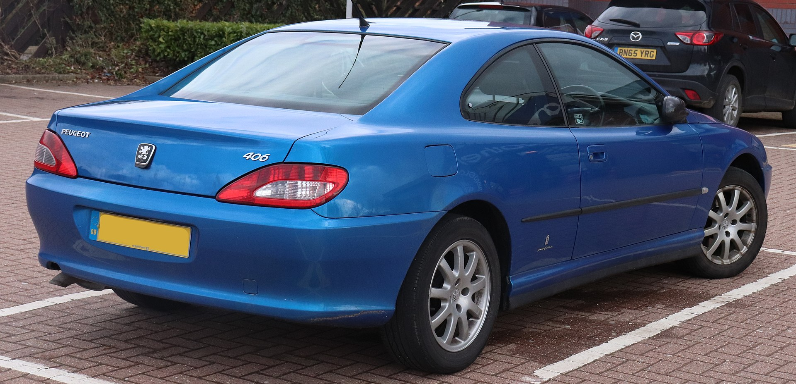

Klasyczne 406 Coupé. Czy jest warte uwagi?

Zdjęcie. 1. Peugeot 406 Coupé po ostatnim liftingu (źródło fr.wikipedia.org).
W 1997 roku Pininfarina zaczęła produkcje jednego z najpiękniejszych coupé lat 90 które było w
zasięgu finansowym sporej grupy zjadaczy chleba. Dokładnie 107 631. Peugeot 406 Coupé, który jak
na francuskie auto przystało był produkowany we Włoszech i tylko tam aż do końca produkcji w 2004.

Zdjęcie. 2. Piękne auto plus Peugeot przed liftingiem (źródło własne).
Dizajn jako najmocniejsza najładniejsza strona

Zdjęcie. 3. Emblemat wewnątrz, wnętrze po liftingu (źródło własne).
Pininfarina na szczęście była również odpowiedzialna za projekt nadwozia. O czym zresztą informują nas emblematy znajdujące się na
zewnątrz i wewnątrz pojazdu.
W czasach produkcji francuskiego Ferrari jak go określiła prasa.
Czekaj! Francuskiego? Ale produkowanego we Włoszech,
czyli francuskiego Ferrari z Włoch.
Prasa po za dobrą robotą dziennikarską zarzucała zbytnie podobieństwo z wcześniej wymienioną marką, która również korzystała z tożsamego biura projektowego.
Więc z jednej strony można twierdzić że po prostu taki był dizajn w danych czasach a z drugiej, że istniejący
projekt został dostosowany dla innego zamawiającego.
Jak było? Nie wiem, choć się domyślam.

Zdjęcie. 4. Ferrari 550 ta mordka jakaś znana? (źródło fr.wikipedia.org).
Spojrzenie na poprzednika może rozjaśni temat?
Peugeot 504 Coupé do którego wcześniejszy akapit można również zastosować.

Zdjęcie. 5. Peugeot 504 Coupé seria 2 (źródło fr.wikipedia.org).
Porównanie "ojca i syna" wskazuję na pokrewieństwo i podważa znacznie dawne zarzuty.
Nawiązań jest sporo jak choćby przód auta czy linia nadwozia. Tylko nie tylne lampy! Te przed
liftingiem to gdzieś już widziałem. Cóż niektórzy uważają że tworzenie to sztuka plagiatu.
Poza tym nawet gama silnikowa jest zbliżona (pomijając diesla).

Zdjęcie. 6. Peugeot 504 Coupé seria 1 (źródło fr.wikipedia.org).
Szyby w kolorze!

Zdjęcie. 7. Wnętrze w kolorze morelowym (źródło fr.wikipedia.org).
Szkło szyb i lusterek zależnie od koloru lakieru miało ten sam odcień... jeśli kolor był niebieski, zielony lub srebrny.
Tak w przypadku innego koloru był któryś z tej puli.
Pula lakierów była duża a dostępność zależna od rocznika i rynku sprzedaży. Nawet kolory i odcienie skóry zmieniały się wraz z rocznikiem (auto było tylko 7 lat produkowane).
Otrzymując piękne nazwy jak orzechowy, morelowy.
Wykończenie wnętrza

Zdjęcie. 8. Wykończenia wnętrza (źródło 406coupeclub.org).
Kolory wnętrza były zbliżone do koloru wykończenia siedzeń. Przy bananowych morelowych skórach mieliśmy żółtą podsufitkę. Skóra na
kierownicy i obicia "boczków" drzwi były zgodna z wykończeniem siedzeń.
Skórzane fotele zawsze występowały przy V6 - wersja wyposażenia SE/Pack.
Z czego rodzajów skóry było sporo od gładkiej poprzez perforowaną, marszczoną a kończąc na "pół-skórze". Aczkolwiek 70% produkcji stanowiły
inne wersje silnikowe a przy tym wyposażenia i głównie mamy welur (podstawowa wersja wyposażenia S).
Regulowane zawieszenie, telefon i GPS
Wyposażenie było zawsze bogate, a najbogatsze przy widlastych silnikach.
Standardowo otrzymywaliśmy elektryczne szyby, lusterka,
klimatyzację (bardzo rzadko manualną), dwie poduszki (w opcji boczne). Podobnie z tempomatem, sterowaniem radiem. Upraszczając - "pełna elektryka".
Do tego czujnik światła a przez to automatyczne włączanie świateł i wycieraczek które o dziwo lepiej działają przed liftingiem. W D9 żyją własnym życiem.
Z ciekawszych rzeczy to nawigacja sterowana pilotem i wyświetlana na monochromatycznym wyświetlaczu. Telefon pokładowy.
Ale najciekawszą z opcji było regulowane zawieszenie. Nie jest to może coś nad wyraz wspaniałego bo nawet 10 lat starsza i klasę niższa Mazda 323 miała w opcji.
To po prostu bardzo rzadkie wyposażenie. Szczerze nigdy nie widziałem ani jednej
na sprzedaż i nie miałem przyjemności prowadzić.
Wraz z rozwojem produkcji część opcji wchodziła do standardowego wyposażenia. Więc im młodszy rocznik tym lepsze wyposażenie.
Bezpieczeństwo
Jak na lata 90 mamy co najmniej dwie poduszki powietrzne i dobry wynik w testach NCAP.
Poczucie bezpieczeństwa jest potęgowane przez spory próg jak i słusznych rozmiarów drzwi. Sztywność nadwozia jest na wysokim poziomie.
Chcąc wymienić przednie koło
od razu podnosimy tylne. Podnosząc tył podnosimy oba tylne. Jeśli zauważymy brak sztywności to mamy korozję.
Napęd i osiągi

Zdjęcie. 9. Silnik 3l V6 207KM wersja z końca produkcji (źródło fr.wikipedia.org).
Do napędu niezależnie od rocznika mieliśmy do wyboru cztery cylindry w rzędzie albo sześć w układzie widlastym (tylko 3.0 zwane również 2.9). W pierwszych latach produkcji
były dostępne jednostki benzynowe o pojemności 2 i 3 litrów. Następnie w 2001 dołączył diesel o pojemności 2.2 który był
pierwszym seryjnym silnikiem wyposażonym w filtr DPF w aucie osobowym (cudowna rzecz)! Rok później do oferty dodano silnik benzynowy również o pojemności 2.2.
Każdy silnik oprócz dwóch ostatnich można było zamówić z klasycznym automatem.
| Pojemność | Model | KM/Nm | 0-100 km/h (s) | Vmax (km/h) | Lata produkcji |
| 2.0 | XU10J4R | 132/180 | 10,4; 14,1 (AT) | 205; 200 (AT) | 1997-1999 |
| 2.0 | EW10J4 | 135-136/190 | 10,4; 12,3 (AT) | 208; 201 (AT) | 1999-2004 |
| 2.2 | EW12J4 | 158/217 | 9,2 | 218 | 2002-2004 |
| 3.0 | ES9J4 | 190/267 | 7,9; 9,6 (AT) | 235; 230 (AT) | 1997-2000 |
| 3.0 | ES9J4S | 207/285 | 7,7; 9,5 (AT) | 240; 232 (AT) | 2000-2004 |
| 2.2 HDi | DW12TED4HX | 133/317 | 10,9 | 201-208 | 2001-2004 |
Przez okres produkcji jednostki nie przechodziły radykalnych zmian.
Trzylitrowa V6 przy współpracy z Porsche na rok 2000 otrzymała zmienne fazy rozrządu na wałku dolotowym co zwiększyło moc (S przy modelu jak ssanie) i
niezauważalnie poprawiło osiągi.
W 2001 roku dwulitrowa EW10J4 dostała inny wtrysk co pozwoliło uzyskać 1KM więcej.
Wszystkie silniki wolnossące nie są łatwe do podnoszenia mocy. Inaczej ma się sprawa z dieslem który za drobną opłatą w autoryzowanym serwisie
miał podnoszoną moc w okolice 155KM i plus 40NM bez utraty gwarancji. Ponoć niektórym na seryjnych gratach udaję się uzyskać okolice 180KM, aczkolwiek mogą być to
wskazania tylko z "dupohamowni".
Wersje limitowane
Wersje specjalne i limitowane różniły się wykończeniem wnętrza. Otrzymywały inne emblematy (prócz Griffe). Jak i zależnie od edycji obszycie
skórą wnętrza. A z zewnątrz inne felgi lub w innym kolorze.
-
Black & Silver lub Sport na bazie "podstawy" wersja nielimitowana. Różnica to dwukolorowe felgi, inne wnętrze.
Kolor auta tylko czarny lub srebrny. Powstało 2 598 sztuk.

Zdjęcie. 10. Wnętrze Black, Silver, Sport (źródło coupe406.com).

Zdjęcie. 11. Silver&Black (źródło 406coupeclub.org).
-
Settant'anni - wyłącznie najmocniejszy silnik V6. Jedyna opcja posiadania białej skóry! Ewentualnie kasztanowa (dostępna standardowo). Elementy wnętrza drewniane,
pokryte skórą. 1 305 sztuk.

Zdjęcie. 12. Limitowana wersja Settant'anni (źródło fr.wikipedia.org).
-
Griffe - najrzadsza choć nielimitowana wersja. Całe 885 sztuk wyprodukowano. Dostępna w trzech kolorach lakieru (dwa szare i czarny). Wyróżnia
się tylko połączeniem zawsze: czarnej skóry, szyberdachu i bogatego wyposażenia.

Zdjęcie. 13. Wersja Griffe (źródło benzin.fr).
-
Ultima Edizione - ostateczna wersja na koniec produkcji. W teorii limitowana bo oficjalnie powstało 2097 sztuk lecz typowo "po włosku"
występują egzemplarze z wyższymi numerami.
Posiada najwięcej elementów pokrytych skórą i bogate wyposażenie.

Zdjęcie. 14. Limitowana wersja Ultima (źródło fr.wikipedia.org).

Zdjęcie. 15. Emblemat wersji Ultima Edizione (źródło fr.wikipedia.org).
Liftingi i modernizacje w okresie produkcji
Przez okres produkcji wykonano dwa liftingi. Pierwszy w latach 1999-2000 gdzie zostało zmienione wnętrze czyli
kierownica i kokpit (zachowując kształt). Przy tym najważniejsza zmiana była niewidoczna. Całe auto przeszło ze sterowania
analogowego na cyfrowe (szyna CAN). Przez to
sporo części (głównie elektrycznych) z "przed lifta" model D8 nie pasuję do "po lifta" model D9.
Zmiana ta zapewniła bezawaryjność i brak problemów z elektryką.
Pod koniec życia w 2003 nastąpił ostatni lifting. Mający upodobnić wygląd auta do reszty gamy modelowej i nadchodzącej 407
z którą 406 Coupé zazębiała produkcję. Zmiany były kosmetyczne:
przedni zderzak, kolory i felgi.
Należy pamiętać że przez okres produkcji samochód był poprawiany i unowocześniany. Na początku produkcji przednie kierunkowskazy
były pomarańczowe
a zawieszenie jak w "zwykłej" 406 (<1998 rokiem).
Rok 1999-2000 to okres przejściowy więc spotkamy tam znane nam choćby z Poloneza "przejściówki" czyli stary silnik, nowe wnętrze itd.
Stabilizacja nastąpiła od 2000 roku. System kontroli
trakcji i stabilizacji toru jazdy (ASR i ESP) zawitał w 2001 roku, niedostępny dla 2.0. Większości dat zmian nie ma jasno określonych.

Zdjęcie. 16. Wnętrze D8 (materiały producenta).

Zdjęcie. 17. Wnętrze D9 (materiały producenta).
406 kontra 406
Dizajn 406 Coupé był całkowicie różny od odmian sedan czy kombi. Żaden element nadwozia nie pasuję od "zwykłej" wersji.
Za to pod spodem i we wnętrzu jest diametralnie inaczej. Wtedy jest to po prostu inna odmiana auta klasy średniej. Dodatkowo coupé było największe czy tam
najdłuższe. Wszak to tylko inne nadwozie ale to te które musi wyglądać ładnie. Dlatego z salonu zawsze wyjeżdżało się na alufelgach!
Zawieszenie za to jest bardziej sportowo autostradowo zestrojone. Jak i ma większy rozstaw tylnej osi. Silniki choć te same to przy odmianie dwudrzwiowej startują od dwóch litrów.
W przypadku wersji V6 lub HDi z przodu mamy czterotłoczkowe zaciski Brembo czego nie było poza coupé, jak i seryjna rozpórka przednich kielichów ale
tylko i wyłącznie przy silnikach widlastych.

Zdjęcie. 18. 406 i 406 (źródło własne).
Awaryjność
Samochód jest jak naprawdę dobra zupa z baru mlecznego. Niby nic szczególnego ale niesamowicie smaczna a przy tym niedroga. Tak właśnie jest z tym autem.
Koszty utrzymania nie zaskoczą nas negatywnie. Większość części jest wspólna z odmianą sedan/kombi a często z resztą aut francuskich tego okresu.
Aczkolwiek niektóre są tylko dla coupé. W tym różnica liftingów D8 i D9 nie pomaga. Dlatego warto przyrównać starą część do nowej. Tu katalogi zawodzą (nie wspominając o zamiennikach).
Ale są to sytuację jednostkowe.
"Silnikowo" nie ma większych problemów. Żadna jednostka nie szczyci się jakimiś większymi problemami. Diesel jako silnik
"nowej generacji" posiada takie elementy zużywalne jak turbina, sprzęgło dwumasowe i DPF.
Najciekawsza jednostka w ofercie V6 "jak nie cieknie tzn. że nie działa". Spotkałem się z takim określeniem jest w nim trochę prawdy ale to nie jest problem
nie do przejścia - wymiana uszczelnień. Często zwykłe pocenie a nie stricte cieknięcie. Znane z innych "fałek" tego okresu.
Spalanie jednostek jest dokładnie średnie. Żadna nie jest jakoś nadzwyczaj ekonomiczna czy paliwożerna. Oczywiście przebija się tu diesel którym możemy spokojnie
przekroczyć 1000km na jednym zbiorniku (oficjalnie 70l, realnie 80). Jak i V6 które w mieście wciągnie 12-15l a na autostradzie może zejść w okolice 8.
Taka jest ich specyfika
więc ciężko się coś więcej nad tym rozwodzić.
Korozja przez ocynk i dobre zabezpieczenie antykorozyjne stanowi marginalny problem (jeśli auto nie było "bite"). Wersje po liftingu lepiej sobie z nią
radzą.
Ze względu na
wiek szukać jej należy w okolicach progów, szyb i odpływach (głównie tylnej klapy).
Największy problem - kruchy plastik zderzaków, brak dostępności nowych i zaporowa cena używanych. Najmniejsza "obcierka" powoduję pęknięcie zderzaka. Przy mocniejszym
uderzeniu zderzak
rozpada się na dziesiątki kawałków. Na szczęście jest spawalny. Więc jeśli komuś zdarzy się psikus to polecam na spokojnie pozbierać wszystkie kawałeczki. Ewentualnie
zakupić drugie auto na dawce bo ceny używanych zderzaków przednich są zbliżone do gorszych okazów. Co gorsza powoduję to w dość młodym aucie
uratowanie jednego egzemplarza to śmierć drugiego.
Cena najdroższego
Cena 406 Coupé 3.0 w automacie pod koniec 1997 na następny rok modelowy wynosiła 160 tys. zł, a w przypadku sedana 112. Nawet luksusowy 605 przy tej
samej konfiguracji był tańszy z ceną 149 tys. Bazowa wersja 2.0 zaczynała się od 107 dla coupé i 83 (wersja wyposażenia SV) dla sedana.
Był to najdroższy Peugeot w ofercie. Co wskazuję w jakich klientów celowano. Gdzie za prestiż posiadania pięknego
coupé zamiast sedana należało dopłacić od 28 do 44%.
Konkurencyjny Mercedes CLK320 był wyceniony na 194 tys. Czyli 21% drożej od topowej V6 a od bazowej 2 litrówki CLK200 aż 32% drożej. Jak widać za bardziej pasujący
do klasy auta tylni napęd i bardziej prestiżową markę należało dopłacić aż trzy Maluchy (STD - 12,7 tys.).
Planowana produkcja na 80 tys. została spora przekroczona. Co świadczy o spełnieniu zakładanego sukcesu rynkowego.

Zdjęcie. 19. Konkurencyjny Mercedes CLK (źródło fr.wikipedia.org).
Konkurencja z kabrioletem i RWD
Wymieniony Mercedes CLK tylko w odmianie kabrioletu sprzedał się w większej ilości niż 406 w coupé, który zresztą nigdy nie był dostępny w takiej
odmianie (tylko prototyp roadstera Toscana).
Konkurencyjne auta jak Ford Cougar i Volvo C70 oferowały zbliżone osiągi, przedni napęd a C70 odmianę Cabrio.
Za to tylnonapędowe CLK
i BMW serii 3 miały znacznie mocniejsze jednostki napędowe i odmiany Cabrio. Tam gdzie kończyła się gama jednostek napędowych Peugeota u nich był to środek gamy.
W przypadku odmian AMG i M można poczuć sportowe emocję, a czasy 0-100 w okolicach 5 s. Nawet dziś stanowią bardzo dobry wynik.
Cóż Peugeot nie miał ani kabrioletu ani mocniejszej jednostki. Zapewne zastosowanie zmian w silniku jak w Clio V6 i uzyskanie mocy 255 koni by nie pomogło
jeśli rywale rynkowi mieli ich o 100 więcej.
W tym można się doszukiwać znacznie większego
wolumenu sprzedaży u konkurencji RWD.

Zdjęcie. 20. Peugeot 406 koncept Toscana - 1996 rok (źródło fr.wikipedia.org).
Peugeot 406 Coupé bezpośrednio
W życiu codziennym Peugeot ten według mnie należy do aut za którymi się obracasz po zamknięciu. Ale ma parę rzeczy w dizajnie które
psują piękną formę projektu (dalej wg. mnie). Są to przednie lampy takie za małe, rozumiem że to przez nawiązanie do poprzednika ale... nie. Druga kwestia to tylni zderzak
- mamy czarne dokładki zderzaka przedniego, potem czarny próg i koniec. W tylnym zderzaku nie ma jakkolwiek do tego nawiązania. Coś jak w starym NFS-sie
zmieniliśmy przedni zderzak i dokładki progowe ale zabrakło nam pomysłu lub kasy na tylny pasujący.

Zdjęcie. 20. Tył Peugeota 406 2.2HDi 2003 (źródło en.wikipedia.org).
Pomijając te szczegóły. Nie można zapomnieć o tylnych słupkach i szybie która jest poniżej ich. Po prostu mistrzostwo znane z aut klasy wyższej. Taka
niby niepotrzebna ekstrawagancja ale właśnie ona była najbardziej potrzebna by wyróżnić tego Peugeota na tle konkurencji. Oczywiście bezramkowe drzwi jak przystało na coupé,
które przy otwieraniu opuszczają się o 2 cm a przy zamykaniu dociskają uszczelkę. W prototypach nie było tego bajeru za to woda w środku.
Wrażenia z obcowania
Zacznijmy od wsiadania. Zajęcie miejsca - spokojnie. Siadamy dość nisko i zatapiamy się w fotelu którego nie chcę się opuszczać
i wcale nie jest jakoś łatwo. Przypomina to żółwia odwróconego na skorupę który machając łapkami chcę wstać.
Auto jest dość niskie, próg szeroki a siedzenia głęboko w środku. Do tego długie drzwi niepomagające na parkingach i najlepiej je otwierać
na oścież. W innym przypadku możemy o nie zaczepić nogą i wybrudzić.
Nie są to tylko moje wrażenia ale również innych osób różnego wzrostu i postury, które miały przyjemność podróżować.
Same siedzenia są wygodne... ale oparcia trochę za krótkie i dla osób 1,8 m+
może być lekki niedosyt. Choć nie zauważyłem żadnych większych problemów w dłuższych trasach.
Z tyłu komfortowo, ale ponownie 1,8+ i zahaczamy głową o dach.
Jakość wnętrza i ergonomia zaskakują pozytywnie. Nie licząc tunelu środkowego który jest podle wykonany z taniego, twardego plastiku. Na kierownicy mamy
skórę podobnie na
gałce zmiany biegów. Wszystkie guziczki sprawnie działają, nie usłyszymy świerszczy w środku. Klimatyzacja działa sprawnie nawet przy upałach przekraczających 30 °C.
Ogrzewanie w zimę nawet w dieslu szybko zaczyna działać.
W trybie nocnym wskaźnik prędkości zawsze lekko podświetla wskazówkę i widzimy z jaką dokładnie jedziemy prędkością - super szczegół.
Miejsca w środku jest sporo. A bagażnik choć mamy auto dwudrzwiowe też nie jest mały - 390l + składane tylne siedzenia. Do tego żadne zawiasy nie wchodzą
do środka i woda z niego nie leci do środka przy otwieraniu co nie jest taką oczywistością nawet przy nowszych autach.
Prowadzenie

Zdjęcie. 16. Wielowahaczowe zawieszenie tylne (materiały producenta).
Prowadzenie nie jest sportowe ale nie jest też "kanapą". Daję przyjemność z jazdy. Auto miało być komfortowe, stabilne na autostradzie i... takie jest.
Nikt nie poświęcił więcej czasu nad rozkładem masy czy bezpośrednią reakcją układu kierowniczego. Dlatego na szybkich łukach ciężki przód wykazuję
się sporą nadsterownością.
Każda wersja silnikowa miała inaczej zestrojone zawieszenie, wysokość i grubość stabilizatorów. Oczywiście najniższa była V6. Diesel choć wyższy to ma wspaniały filtr
cząsteczek stałych przez co na zwykłych progach zwalniających często możemy nim szorować. Co przy widlastej jednostce nie jest tak popularne.
Jeździ się najprzyjemniej starszą "fałką" ze względu na natychmiastową reakcję na gaz. Dźwięk V6 potęguję doznania. Ropniak ma dobrze dobrany układ wydechowy
i tak, brzmi przyjemnie. O rzadkiej wersji benzynowej 2.2 nie jestem w stanie się jakkolwiek wypowiedź. Podstawowe jednak dość słabe
2 litrowe benzyny są i napędzają auto. Jako nieznacznie lżejsze od reszty jednostek poprawiają dystrybucję masy.
Film. 1. Dźwięk V6.
Czy warto?
Jako że na ten moment temu modelowi bliżej do youngtimera niż codziennego gruza. Należy pamiętać przy zakupie wymarzonej i jedynej takiej. Roczniki
1997 mają pomarańczowe boczne kierunki ale często były wymieniane na przezroczyste, tożsame z innymi Peugeotami przez to tanie.
Zderzak przód jak na pierwszym zdjęciu pojawił się pod koniec produkcji.
Lusterka są zawsze w czarnym metaliku a część progu, dokładki zderzaka przód i listwa drzwi w pięknym czarnym kolorze plastiku.
Aczkolwiek podobnie jak z "kierunkami" częste było przemalowywanie na jednolity kolor.
Możliwe że po kolizji i wyklucza jedyny taki oryginał. Ale mógł być to zwykły kaprys właściciela.
Przyrównując do konkurentów jest to bardzo porządny "kawał żelastwa". Który przez brak większych problemów z korozją. Powoduję dużą dostępność jak na ilość wyprodukowanych sztuk.
Więc na rynku wtórnym znalezienie jakiejkolwiek sztuki w niskiej cenie nie jest problemem ale zadbane czy edycje limitowane wyszły już z dołka cenowego i osiągają ceny na poziomie większych
mocą konkurencyjnych modeli.
Ze swojej strony polecałbym wersję V6, D8. Jeśli ktoś chce na auto codzienne to nie przejmowałbym się silnikiem tylko stanem. Jako inwestycja w pierwszej kolejności
warto zwrócić uwagę na edycję limitowane a w drugiej na widlaste silniki i zawsze bogato wyposażone. Z doświadczenia w szukaniu zadbanej "fałki" mogę życzyć: zdrowia, szczęścia, pomyślności.
Jeśli komuś się podoba niech szuka ale to nie będzie łatwa misja.
Czy warto?
Jest to sprawa bardzo indywidualna. Są to auta w czymś lepsze, w czymś gorsze od innych. Nadal to tylko średnia półka ale bardzo dobrze wypoziomowana i ma
odrobinę Maggi. Szyby w paru kolorach, regulowane zawieszenie, nawigacja i pilot do tego, telefon, edycje limitowane... dizajn.
Autor: Damian Krukowski